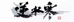
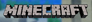
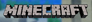
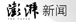

Zhengxia Zou, Ph.D.
"Keep Calm and Don't Overfit."
About Me
[Intern Position]: I am hiring self-motivated graduate/undergraduate students. Intern positions are always available. Please email me with your CV if you are interested.
NEW (06/2022): One paper accepted to ACM MM 2022.
NEW (02/2022): One paper accepted to ICRA 2022.
NEW (12/2021): One paper accepted to AAAI 2022, oral presentation.
NEW (08/2021): One paper accepted to ICCV 2021, oral presentation. ( [Preprint] )
NEW (06/2021): Stylized Neural Painting launched as a new feature in two AI photo editors: REMINI ( Google Play | IOS App Store ) and 你我当年 ( XIAOMI App Sstore | IOS App Store ), with over 50M users worldwide.
NEW (02/2021): One paper accepted to CVPR 2021, oral presentation ( Preprint | Project | GitHub ).
NEW (01/2021): One paper accepted to IEEE Transactions on Image Processing (TIP) ( Preprint | Github ).
NEW (12/2020): I will be serving as a Senior Program Committee (SPC) member in IJCAI 2021.
NEW (09/2020): Our neural rendering paper was accepted by TPAMI. A great pleasure working with NetEase Fuxi Labs.
NEW (02/2020): One paper accepted to CVPR 2020.
Research Highlights
- 40+ peer-reviewed publications, including 20+ top-tier journals and conferences (TPAMI, TIP, CVPR, ICCV, AAAI, ICRA, ... )
- 2000+ Google Scholar citations, 4000+ GitHub Stars/Forks
- Two papers selected in PaperWithCode "Top-10
Trending Research" and "GitHub Trending Repositories"
- Featured in two top-university courses (Stanford CS231n and Georgia Tech GT8803)
- Featured in 10+ platforms with over 80M registered
users worldwide, including REMINI, 你我当年, MCITY, 逆水寒, 天谕手游, Weights&Biases, REPLICATE AI, RUNWAYML, PaddleHub...
- Covered by 30+ high-impact tech-media, including 新华社, 中央电视台, TheNextWeb, MIT Technology Review (China), Two-Minute-Papers, Synced, 机器之心, 量子位...
Selected Publications
Zhengxia Zou, Zhenwei Shi, Yuhong Guo, and Jieping Ye. Object Detection in 20 Years: A Survey. CoRR, abs/1905.05055, 2019. [PDF]
Extensively reviews 400+ papers of object detection in the light of technical evolution, spanning over a quarter-century’s time (from the 1990s to 2019). A number of topics are covered in this paper, including milestone detectors, detection datasets, metrics, fundamental building blocks of detection systems, speed up techniques, and the recent state of the art detection methods. - High-impact Citations: CS231n: Convolutional Neural Networks for Visual Recognition 2019-2021. - Media Coverage: 密歇根大学40页最新论文带你全面了解目标检测
- In Other Languages: English-to-Chinese (1) | English-to-Chinese (2)
密歇根大学40页最新论文带你全面了解目标检测
- In Other Languages: English-to-Chinese (1) | English-to-Chinese (2)
Tianyang Shi*, Zhengxia Zou*
(*equal contribution), Zhenwei Shi, and Yi Yuan.
Neural Rendering for Game Character Auto-creation. IEEE
Transactions on Pattern Analysis and Machine
Intelligence, 2020. [PDF]
- Featured Applications: 
 逆水寒
(Justice) and 天谕手游 (Heaven Mobile), two massively
multiplayer online role-playing games (MMO-RPG) with 30M+
players worldwide
逆水寒
(Justice) and 天谕手游 (Heaven Mobile), two massively
multiplayer online role-playing games (MMO-RPG) with 30M+
players worldwide
- Media Coverage: [经济信息联播]元宇宙应用渐热 记者走入“元宇宙” 体验个性化“捏脸”和动作捕捉 |

 只需一张自拍，网易伏羲用这种方法直接生成「个人专属」游戏角色 |
See Your Own Face in 3D Video Games with
a Selfie | NetEase developing AI to turn selfies
into 3D game avatars |
只需一张自拍，网易伏羲用这种方法直接生成「个人专属」游戏角色 |
See Your Own Face in 3D Video Games with
a Selfie | NetEase developing AI to turn selfies
into 3D game avatars |  Chinese Gaming Giant NetEase Leverages AI
to Create 3D Game Characters from Selfies |
Chinese Gaming Giant NetEase Leverages AI
to Create 3D Game Characters from Selfies |  NetEase Developing AI to Turn Selfies
into 3D Game Avatars |
NetEase Developing AI to Turn Selfies
into 3D Game Avatars |  (In Spanish) Una AI convierte tu selfie
en un personaje de videojuego | How 3D faces can be developed for video
games
(In Spanish) Una AI convierte tu selfie
en un personaje de videojuego | How 3D faces can be developed for video
games
Zhengxia Zou, Tianyang Shi, Shuang Qiu, Yi Yuan, and Zhenwei Shi. Stylized Neural Painting. IEEE Conference on Computer Vision and Pattern Recognition (CVPR) 2021, Oral Presentation. [PDF] [1min-DemoVideo] [Project] [Github] [Google Colab]
- Featured Applications: REMINI, an AI photo enhancer with 50M+ users worldwide | 你我当年, an AI photo editor ranked No. 16 ("photos") in XiaoMI AppStore | RunwayML, a web-based video editing software
- Media Coverage:
 动动手，一起为春天中国“添彩” - 送您一支AI画笔, 为祖国春天涂抹万千风情
| 有 了这支矢量神经风格画笔，无需GAN也可生成精美绘画 | Automatic Image-to-Painting Translation
Method Generates Vivid Paintings in Controllable Styles
| An Image-To-Painting Translation Method
That Generates Painting Artworks With Controllable Styles
- Social Media Channels:
动动手，一起为春天中国“添彩” - 送您一支AI画笔, 为祖国春天涂抹万千风情
| 有 了这支矢量神经风格画笔，无需GAN也可生成精美绘画 | Automatic Image-to-Painting Translation
Method Generates Vivid Paintings in Controllable Styles
| An Image-To-Painting Translation Method
That Generates Painting Artworks With Controllable Styles
- Social Media Channels:
 This AI can "DRAW" Oil-Paintings, Pixel
Art, and Illustrations
|
This AI can "DRAW" Oil-Paintings, Pixel
Art, and Illustrations
|  Image-to-Painting Translation With Style
Transfer |
Image-to-Painting Translation With Style
Transfer |
 #Homeless; #The Great Wave off Kanagawa
#Homeless; #The Great Wave off Kanagawa
Zhengxia Zou, Rui Zhao, Tianyang Shi, Shuang Qiu, and Zhenwei Shi. Castle in the Sky: Dynamic Sky Replacement and Harmonization in Videos. IEEE Transactions on Image Processing, 2022. In press. [PDF] [1min-DemoVideo] [Project] [Github] [Google Colab]
- Featured Applications:
 PaddleHub,
a deep learning model toolkit of Baidu Inc. |
PaddleHub,
a deep learning model toolkit of Baidu Inc. |  Weights & Biases, a ML
developer tool with 100,000+ practitioners
Weights & Biases, a ML
developer tool with 100,000+ practitioners
- Media Coverage:
建造自己的“天空之城”，密歇根大学博士后的这项研究可以虚空造物、偷天换日
|  This open-source AI tool can make your
video spectacular with... | The Top 10 Trending ML Projects of 2020
- Social Media Channels:
This open-source AI tool can make your
video spectacular with... | The Top 10 Trending ML Projects of 2020
- Social Media Channels:  AI-Based
Sky Replacement Is Here! 🌓
| AI Sky Replacement with SkyAR | 
SkyAR X MineCraft | #SkyAR The Lion King; #SkyAR X Kelly Lacy from Pexels
AI-Based
Sky Replacement Is Here! 🌓
| AI Sky Replacement with SkyAR | 
SkyAR X MineCraft | #SkyAR The Lion King; #SkyAR X Kelly Lacy from Pexels
Zhengxia Zou, Rusheng Zhang, Shengyin Shen, Gaurav Pandey, Punarjay Chakravarty, Armin Parchami, and Henry X. Liu. Real-time Full-stack Traffic Scene Perception for Autonomous Driving with Roadside Cameras. The International Conference on Robotics and Automation (ICRA), 2022. [PDF] [1min-DemoVideo]
- Featured Applications: Deployed at a two-lane roundabout located at Ellsworth Rd. and State St., Ann Arbor, MI, USA, providing 7x24 real-time traffic flow monitoring for hazardous driving scenarios identification.


Yinglin Duan, Yue Lin, Zhengxia Zou* (*Corresponding author), Yi Yuan, Zhehui Qian, Bohan Zhang. A Unified Framework for Real Time Motion Completion. AAAI Conference on Artificial Intelligence (AAAI) 2022, Oral Presentation.

Zhengxia Zou. Rocket-recycling with Reinforcement Learning, GitHub repository 2021 (This is not a peer-reviewed paper. However, it is an interesting open-source project. Hope you like it!). [Project] [1min-DemoVideo] [Github]
- Media Coverage:
空中悬停、翻滚转身、成功着陆，我用强化学习「回收」了SpaceX的火箭
|  华
人博士用强化学习回收了SpaceX火箭 | 开源
华
人博士用强化学习回收了SpaceX火箭 | 开源Jiangke Lin, Yi Yuan, and Zhengxia Zou. MeInGame: Create a Game Character Face from a Single Portrait. AAAI Conference on Artificial Intelligence (AAAI) 2021. [PDF] [1min-DemoVideo] [Github]
- Media Coverage:
 中
外团队联合研发深度学习方法MeInGame，用单张照片即可自动生成定制化游戏角色
|
中
外团队联合研发深度学习方法MeInGame，用单张照片即可自动生成定制化游戏角色
|  MeInGame: A deep learning method to
create videogame characters that look like real people
|
在游戏里还原自己的脸，给AI一张照片就行，网易&密歇根大学出品
|
MeInGame: A deep learning method to
create videogame characters that look like real people
|
在游戏里还原自己的脸，给AI一张照片就行，网易&密歇根大学出品
|  MeInGame: нейросеть генерирует игрового
персонажа по изображению лица |
MeInGame: нейросеть генерирует игрового
персонажа по изображению лица |
 A deep learning method to create
videogame characters that look like real people |
A deep learning method to create
videogame characters that look like real people |
 MeInGame: Create a Game Character Face
from a Single Portrait |
Researchers at the University of Michigan
and Netease Fuxi AI Lab Introduce ‘MeInGame’: A Deep
Learning Technique To... |
자신과 빼닮은 캐릭터로 게임할 수 있다…AI로 진화하는 게임산업
MeInGame: Create a Game Character Face
from a Single Portrait |
Researchers at the University of Michigan
and Netease Fuxi AI Lab Introduce ‘MeInGame’: A Deep
Learning Technique To... |
자신과 빼닮은 캐릭터로 게임할 수 있다…AI로 진화하는 게임산업Zhengxia Zou, Sen Lei, Tianyang Shi, Zhenwei Shi, and Jieping Ye. Deep Adversarial Decomposition: A Unified Framework for Separating Superimposed Images. IEEE Conference on Computer Vision and Pattern Recognition (CVPR) 2020. [PDF] [1min-DemoVideo] [Github]
Zhiqian Lin, Jiangke Lin, Lincheng Li, Yi Yuan, Zhengxia Zou* (*Corresponding author). High-Quality 3D Face Reconstruction with Affine Convolutional Networks. ACM International Conference on Multimedia (ACM MM) 2022.

Zhengxia Zou, Tianyang Shi, Yi Yuan, and Zhenwei Shi. NeuralMagicEye: Learning to See and Understand the Scene Behind an Autostereogram. CoRR, abs/2012.15692, 2020, submitted to ****. [PDF] [1min-DemoVideo] [Project] [Github] [Google Colab]
- Media Coverage:
 多数人类看不懂的立体图，AI现在看懂了 
Zhengxia Zou, Tianyang Shi, Zhenwei Shi, and Jieping Ye. Adversarial Training for Solving Inverse Problems in Image Processing. IEEE Transactions on Image Processing, 2021. [PDF] [1min-DemoVideo] [Github]
Wenyuan Li, Zhengxia Zou*, and Zhenwei Shi* (*Corresponding author). Deep Matting for Cloud Detection in Remote Sensing Images. IEEE Transactions on Geoscience and Remote Sensing, 2020. [PDF]

Sen Lei, Zhenwei Shi*, and Zhengxia Zou* (*Corresponding author). Coupled Adversarial Training for Remote Sensing Image Super-resolution. IEEE Transactions on Geoscience and Remote Sensing, 2020. [PDF]
Zhengxia Zou, and Zhenwei Shi. Random access memories: A new paradigm for target detection in high resolution aerial remote sensing images. IEEE Transactions on Image Processing, 2018.
Zhengxia Zou, and Zhenwei Shi. Ship Detection in Spaceborne Optical Image With SVD Networks. IEEE Transactions on Geoscience and Remote Sensing, 2016.
Zhenwei Shi (Ph.D. supervisor), Zhengxia Zou, Changshui Zhang. Real-time Traffic Light Detection with Adaptive Background Suppression Filter. IEEE Transactions on Intelligent Transportation Systems, 2015.
Zhenwei Shi (Ph.D. supervisor), and Zhengxia Zou* (Corresponding author). Can a machine generate humanlike language descriptions for a remote sensing image? IEEE Transactions on Geoscience and Remote Sensing, 2017.
Zhengxia Zou, and Zhenwei Shi. Hierarchical suppression method for hyperspectral target detection. IEEE Transactions on Geoscience and Remote Sensing, 2015.
Academic Activities
- Remote Sensing (IF=4.848) Special Issue: "Pattern Recognition and Image Processing for Remote Sensing II". Deadline for manuscript submissions: 31 Oct 2022.
- Remote Sensing (IF=4.848) Special Issue: "Advanced Learning Techniques for Remote Sensing Image Quality Improvement". Deadline for manuscript submissions: 31 August 2022.
- Remote Sensing (IF=4.848) Special Issue: "Computational Intelligence and Advanced Learning Techniques in Remote Sensing". Deadline for manuscript submissions: closed (31 July 2021).
- Senior Program Committee (SPC) member of IJCAI 2021.
- CVPR 2020, 2021, 2022 PC Member; NeurIPS 2019, 2020 PC Member; ICCV 2021 Reviewer; ICLR 2021 Reviewer; AAAI 2020, 2021 PC Member; ACCV 2020 PC Member; WACV 2021 PC Member.
- IEEE Transactions on Pattern Analysis and Machine Intelligence; IEEE Transactions on Image Processing; IEEE Signal Processing Magazine; IEEE Transactions on Geoscience and Remote Sensing; IEEE Signal Processing Letters; IEEE Geoscience and Remote Sensing Letters; Remote Sensing; Infrared Physics and Technology; International Journal of Remote Sensing; Electronics; Journal of Computational Methods in Sciences and Engineering; Journal of Marine Science and Technology; Computational Intelligence and Neuroscience; Journal of Spectroscopy; The Visual Computer; International Journal of Machine Learning and Cybernetics.
- Best Reviewer of Infrared Physics & Technology (2017).
- Mixed reality and neural rendering for visual perception. Invited talk at BtyeDance, Mountain View, USA and Beijing, China. Jan 2022.
- Mixed reality and neural rendering for visual perception. Invited talk at OPPO Research Institute, Beijing, China. Jan 2022.
- Mixed reality and neural rendering for visual perception. Invited talk at NIO, Beijing, China. Dec 2021.
- Mixed reality and neural rendering for visual perception. Invited talk at Didi Chuxing, Beijing, China. Dec 2021.
- Stylized Neural Painting. TechBeat AI Talk. June 2021.
- Stylized Neural Painting. CVPR Oral. June 2021.
- Art-centric Neural Rendering and Augmented Reality. University of Texas, Austin. Dec 2020.
- Neural Rendering for Visual Editing and Visual Arts. Ocean University of China. Dec 2020.
- Object Detection in 20 Years. Didi Chuxing, Beijing, China. Jul 2019.
- Adversarial Training for Solving Inverse Problems. Didi Chuxing, Beijing, China. Jul 2019.
- Introduction to Deep Learning and Computer Vision - Past, Present and Future. M-Culture Salon, University of Michigan, Ann Arbor. Jan 2020.
- I was a summer exchange student at the University of Cambridge and the University of Oxford, U.K., in Jul 2017.
Honors and Awards
- Outstanding PhD dissertation award (nomination) of CSIG. Nov. 2019 (中国图象图形学会优博论文提名奖)
- Outstanding PhD dissertation award of Beihang University. Sept. 2019 (北航优博论文奖)
- Top-10 Graduate Students" of Beihang University (top-10/4,000). Jun. 2018 (北航十佳博士研究生)
- Outstanding Graduates of Beijing. Jul. 2018 (北京市优秀毕业生)
- Best Reviewers of the "Infrared Physics & Technology", 2017 (2017年度最佳审稿人)
- Ph.d. National Scholarship (top-100/4,000). Dec. 2016 (研究生国家奖学金)
- Ph.d. Excellent Scholarship of Beihang University (top-100/4,000). Dec. 2017 (北航卓越基金)
- Grand prize of the "Baogang Scholarship" (50 students selected in China, ranking 1st in Beihang University). Nov. 2012 (宝钢优秀生特等奖，同年全国仅50名，北航仅一人入选)
- First prize of the "Beijing College Student Physics Competition" (Top 50 in Beijing, ranking 1st in Beihang University). Dec. 2010 (北京市大学生物理竞赛一等奖，校第一名)
- First prize of the "Beihang College Student Mathematics Competition" (top-30/1,000). Jun. 2010 (北航大学生数学竞赛一等奖)
- First prize of the "Fengru Cup Scientific Competition" (top-20/1,000). May. 2011 (北航冯如杯一等奖，第一作者，获研究生推免资格)
- Second prize of the "Fengru Cup Scientific Competition". May. 2012 (北航冯如杯二等奖)
- Second prize of the "Beijing College Student Scientific Competition". Jun. 2011 (首都挑战杯二等奖，第一作者)
- Third prize of the "National College Student Mathematics Competition". Jun. 2010 (全国大学生数学竞赛三等奖)
- Second prize of the "Beihang College Student Physics Competition". May. 2010 (北航大学生物理竞赛二等奖)
- Third prize of the "Zhou Peiyuan Mechanics Competition for College Students". May. 2011 (全国周培源大学生力学竞赛三等奖，所在非力学专业唯一晋级选手)
- Bronze Award of the "2nd Beihang University Student Art Show: Instrumental Competition" (北航大学生艺术展演——器乐专场比赛铜奖)
Misc

This robot worm was made during my undergraduate years. My team members and I spent 3 months creating this steampunk-style bionic robot with a bunch of scrap metal. We had an amazing time working together. We finally won the first prize in the student contest of our university and defeated all senior teams.


Numerical optimization is one of the most important math foundations of computer vision and machine learning. For most beginners, optimization algorithms are not easy to understand. In my early PhD years, the math behind it has always made me big head 🙁🙁.
During the winter break of 2016, I revisited some well-known optimization algorithms I learned in my PhD classes (e.g., Gradient Descent, Newton/Quasi-Newton Method, ALM, etc.), and made some cool GIF visualizations. Through the animated plots we see how these algorithms behave dynamically. Check out this blog for more details and I hope it will help you better understand them.